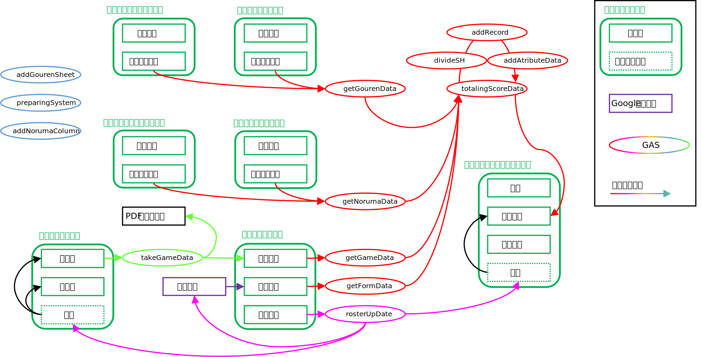

設計思想
AIMSは以下のような目的と優先順位で設計されています
システムの更新は設計思想を理解した上で、必要だと思った場合に行なってください
-
データが失われないように
Ex）GASでエラーが発生した場合は処理を中断する。シートを保護する。
-
スマホから入力しやすいように
Ex）縦型のレイアウト、リストでの入力
-
軽く動作するように
Ex）関数でスプレッドシートをまたぐ処理をしない。不要なセルは削除する。
-
想定外の入力をされないように
Ex）セルを保護する。データの入力規制を設定する。
-
引き継ぎやすいように
Ex）引継ぎマニュアルを更新する。GASにコメントを記述する。
-
維持作業が少なく済むように
Ex）自動化できる部分は自動化する。
構成オブジェクト
以前は公開していましたが、リアルタイムのコード更新に追いつかないため、希望者はその時のAIMS管理者に連絡してGASプロジェクトへのアクセス権をもらってください。
データの流れ
オブジェクト間のデータのやりとりを把握しやすくするために図示する
